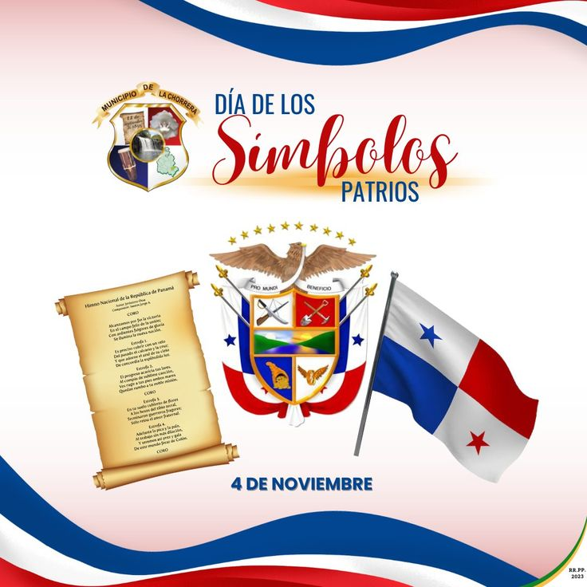

4 de Noviembre Dia
de los símbolos patrios

Día de los Símbolos Patrios
El 4 de noviembre es una fecha significativa en Panamá,
ya que se celebra el Día de los Símbolos Patrios,
que honra la identidad y el orgullo nacional a través
de los emblemas fundamentales del país: la Bandera, el Escudo y el Himno Nacional
. Además, conmemora la Separación de Panamá
de Colombia en 1903, un evento histórico que
marcó el inicio de la construcción de una identidad nacional propia.
Los símbolos patrios de Panamá son la Bandera Nacional,
el Escudo de Armas y el Himno Nacional,
representando la identidad y la historia de la nación panameña.
Cuartel superior izquierdo: blanco con una estrella azul, simbolizando la pureza y el valor.
Cuartel superior derecho:
rojo, representando el partido liberal.
Cuartel inferior izquierdo: azul,
representando el partido conservador.
Cuartel inferior derecho: blanco con una estrella roja,
simbolizando la autoridad y la legislación.
Importancia del 4 de noviembre
El 4 de noviembre fue designado como una de las fechas más importantes del calendario patrio porque
representa la consolidación del sentimiento nacional tras la Separación de Panamá de Colombia.
Pero antes de ser el Día de los Símbolos Patrios, fue el Día de la Bandera.